Animal Classification
The effect of colour casts on a CNNRenk kaymasının bir CNN'e etkisi
*75% on clean images and 11% on green images**temiz görüntülerde %75, yeşil tonlu görüntülerde %11 doğruluk*I trained a CNN for animal classification and changed the colour of the test images. The accuracy dropped from 75% to 11% on green images. A white-balance step and a Bayesian-optimised model both recovered the accuracy to about 71–73%.
Hayvan sınıflandırması için bir CNN eğittim ve test görüntülerinin renk tonunu değiştirdim. Doğruluk yeşil tonlu görüntülerde %75'ten %11'e düştü. Hem white balance düzeltmesi hem de Bayesian optimizasyonla ayarlanan model doğruluğu yeniden %71–73 seviyesine çıkardı.
- stackteknolojiler
- TensorFlow · Keras · OpenCV · scikit-learn · Matplotlib
1. The question1. Soru
A cheap camera or bad light can add a colour cast to an image. I measured how much a colour cast changes the accuracy of a CNN. I also tested two methods to recover the accuracy.
Ucuz bir kamera ya da kötü bir ışık, görüntüye kolayca bir renk tonu katabilir. Böyle bir renk kaymasının bir CNN'in doğruluğunu ne kadar etkilediğini ölçtüm ve kaybı telafi etmek için iki yöntem denedim.
2. The experiment2. Deney

- The CNN has Conv2D, MaxPooling, Dense and Dropout layers. The dataset is Animals with Attributes 2 from Kaggle.
- I changed the colour of the test images to purple, yellow and green.
- I compared a manually tuned model with a Bayesian-optimised model.
- CNN; Conv2D, MaxPooling, Dense ve Dropout katmanlarından oluşuyor. Veri seti Kaggle'daki Animals with Attributes 2.
- Test görüntülerini mor, sarı ve yeşil tonlara kaydırdım.
- Elle ayarlanmış bir modeli Bayesian optimizasyonla ayarlanmış bir modelle karşılaştırdım.
3. Results3. Sonuçlar
The manual model dropped to 25%, 33% and 11% on the purple, yellow and green images. A white-balance correction brought it back to about 73%. The Bayesian-optimised model stayed at 71–73% on the shifted images without a correction.
Elle ayarlanan modelin doğruluğu mor, sarı ve yeşil tonlarda sırasıyla %25, %33 ve %11'e düştü. White balance düzeltmesi bu değeri yaklaşık %73'e geri getirdi. Bayesian optimizasyonlu model ise hiçbir düzeltme yapılmadan renk kaymalı görüntülerde %71–73 aralığında kaldı.
One test-set accuracy does not describe the data that a model meets in use. This lesson also guides the leakage checks in my thesis.
Tek bir test seti doğruluğu, modelin gerçek kullanımda karşılaşacağı veri hakkında pek bir şey söylemiyor. Tezimdeki sızıntı kontrollerinin arkasında da aynı düşünce var.
4. Design Q&A4. Tasarım üzerine sorular
Is it better to fix the input or the model?Girdiyi düzeltmek mi daha iyi, modeli mi?
Both methods recovered about the same accuracy. A white-balance step is cheap and needs no training. A model that is less sensitive to colour needs no extra step at inference time. The selection depends on the deployment.
İki yöntem de doğruluğu aşağı yukarı aynı seviyeye çıkardı. White balance ucuz ve eğitim gerektirmiyor; renge daha az duyarlı bir model ise inference sırasında ekstra bir adıma ihtiyaç duymuyor. Hangisinin seçileceği, modelin nerede çalışacağına bağlı.
Which changes do you make in a new version?Yeni bir sürümde neleri değiştirirsin?
I start from a pre-trained model with transfer learning. I also add colour augmentation to the training data. The README of the project gives the same recommendation.
Transfer learning ile önceden eğitilmiş bir modelden başlar ve eğitim verisine renk augmentation'ı eklerim. Projenin README dosyası da aynı öneride bulunuyor.